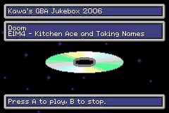

| Sappy 2006: Jukebox |
 The Jukebox Demo Rom is written by Kyoufu Kawa, based on code from Catnip Dreams. Even though it demonstrates simple palette rotation and less simple Variable Width Fonts, it's main focus is to play songs using the M4A engine.
Left/Right - Select song. Your selection wraps around if needed.
A button - Play the currently selected song.
B button - Stop playing.
Shoulder buttons - Play sound effects.
The rom's internal name and gamecode is KAWAJUKE 2K6 - KWJ6. It has a Maker Code of 0xFF. It was made with the official Nintendo-brand GBA development kit. It has the unique quality of having all the song data at the start of the ROM.